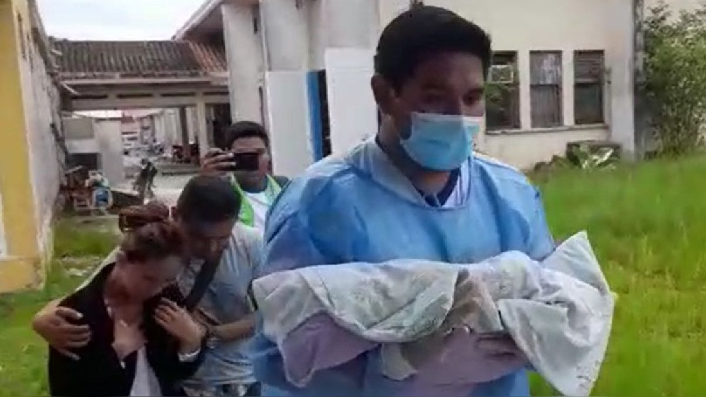

Internacional
Autor: José Ubilla
Un bebé de 11 meses murió en la ciudad de Iquitos, en Perú, en medio de un asalto del que fueron víctimas sus padres. Según indicó La República, la pareja fue abordada por un grupo de desconocidos que además de robarles sus pertenencias, acuchillaron al lactante, hiriéndolo gravemente.
El menor fue trasladado a un centro asistencial donde fue conectado a un ventilador mecánico, muriendo dos días después del hecho.
Más allá de la conmoción que ha generado el caso al país, este tornó un giro debido a las acusaciones de la madre del menor contra su padre. La mujer acusó directamente al hombre de organizar el ataque para asesinar al bebé para que no tuviera que pagarle pensión de alimentos.
"Yo sé que tú has matado a mi hijo para no darme la pensión, yo sé. Para que te vayas con tu mujer que tienes en Lima. No sé por qué los habrás hecho", dijo Vanessa Cachique acusando a Jesús Bautista según el mismo medio. El hombre negó la acusación y aseguró que la madre aún está aturdida por la pérdida del niño.
Igualmente, la Fiscalía está investigando el hecho y no descarta la presunta implicancia de algunos de los padres en el crimen.